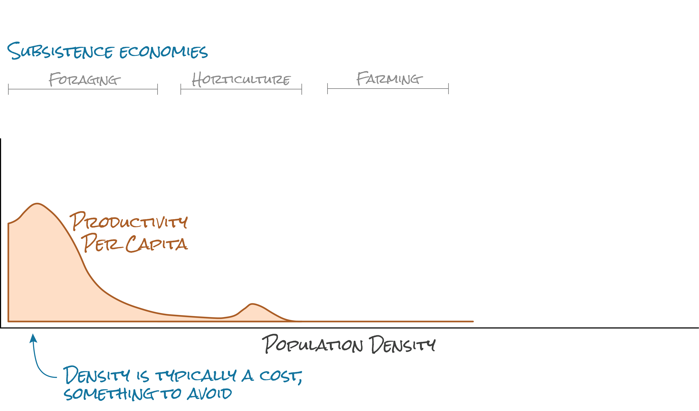

The Ecology of Agglomeration and
the Rise of Chaco Great Houses
2023-03-06
What is it that you do?
If I don’t want to talk to the person, I say, “I’m an archaeologist.”
If I do want to talk to the person, I also say, “I’m an archaeologist.”
And then I explain that I’m really a behavioral ecologist that focuses on specifically human behavior, drawing on the archaeological record to test models and hypotheses about long term trends and their aggregate effects.
What is a Chaco great house?
Great Houses
Why are great houses at these locations?
The Question
A Modern Analog?

Familiar Hypotheses
- Socioeconomic Productivity
üöö reduced transport costs, üë∑ available laborÔ∏è, üìà scaling, historic inertia? - Environmental Productivity
üå≥ natural resources, soil, üå§Ô∏è climateÔ∏è,üíß water!
- But cities are costly, too!
More people means i) more competition for jobs, ii) higher rents, iii) more expensive food, iv) stress and anxiety
A Cartoon Model of History

Behavioral Ecology
BE = Microeconomics + Darwin
or, utility maximization where proximate utility contributes to long-term inclusive fitness
or, revealed preferences where preferences are shaped by natural selection
Not as reductionist as it may seem, simply the idea that people’s behaviors are reasonable, that there are reasons why they do what they do.
Two key assumptions:
- Optimality - individuals will do what they should do to achieve their goals
- Sufficient knowledge - individuals have a sufficient number of true beliefs about their circumstances to do that
Sometimes referred to as the “principle of charity” or the “principle of rational accommodation.”
- To explain a behavior, we attribute to an individual a goal and a set of beliefs about their environment, including relevant constraints and trade-offs.
- If there is a mismatch, if the behavior appears sub-optimal, we must revise one of our descriptions, either of the behavior itself (how it is done), the goal, the beliefs, or the environment.
- This is rational accommodation, an attempt to understand the individual in their context.
- The fact that we can do this is owing to natural selection.
The Ideal Free Distribution
The suitability \(S_i\) of habitat \(i\) is some function of its population density \(D_i\)
\[S_i = Q_i - f(D_i) - C_i\]
where
- \(Q_i\) is the pristine suitability of \(i\) or the suitability when \(f(D_i)=0\), and
- \(C_i\) is some additional cost of inhabiting \(i\).
⚠️ Suitability is a synonym for per capita productivity, though it is also a proxy for inclusive fitness.
Can use this to model habitat selection.
What about scaling effects?
We can’t just brush aside the collective action problem, but…
maybe we can loosen the requirement that \(Q\) remain constant relative to density?
So, what about great houses?
Familiar Hypotheses
- Socioeconomic Productivity
üöö reduced transport costs, üë∑ available laborÔ∏è, üìà scaling, historic inertia? - Environmental Productivity
üå≥ natural resources, soil, üå§Ô∏è climateÔ∏è,üíß water
The Model
Units of analysis
- Space: HUC 10 watersheds (N = 208) as defined by the USGS.
- Time: 25-year time steps (N = 33)
Project area
- Space: the extent of watersheds that overlap with the Chaco world
- Time: years from 650 to 1450 (gives a buffer around start and end dates of Chaco great houses)
Proxies for productivity
- Socioeconomic productivity
- density per watershed of rooms at farms/pueblos
- density per watershed of rooms at great houses
- assumption is that more rooms = more people
- density per watershed of rooms at farms/pueblos
- Environmental productivity
- a paleo-climate reconstruction
- average precipitation and
- maize growing degree days (GDD)
Response variables
Model we are using is a Bayesian spatio-temporal count model fit using INLA in R.1
Assumes the response is Poisson distributed:
\[O|E \sim Poisson(E\cdot O)\]
where
\(E\) is the density across the project area multiplied by the area of each watershed, so an expected count, and
\(O\) is the ratio of the observed to the expected count, so values greater than one indicate a count greater than expected.
1. Still trying to wrap my head around this. Just started using this approach about three days ago…
Model specification
Then model \(O\) as a log-linear model:
\[log\,(O) = \alpha + \beta X + u + v + w + \epsilon\]
where \(u, v, w\) are random effects for space, time, and watershed.
Actually includes smooth terms for potential non-linear effects.
Intuition?
We’re not just modeling the locations of great houses, but their level of intensity relative to that of farm or pueblo sites.
And, we are modeling each as a function of the environment.
So, you can think of this model as answering the question: did some amount of historical inertia drive the distribution of great houses over and above environmental productivity?
Data sources
The archaeological data come from cyberSW, a cyberinfrastructure and collaborative space for conducting interdisciplinary research on and exploring the pre-Hispanic archaeological record of the US Southwest and Northwest Mexico.
SKOPE
Synthesizing Knowledge of Past Environments
Paleo-climate data provided by SKOPE, specifically the PaleoCAR model that regresses modern PRISM data on tree ring widths to hindcast past climates.
Data issues
Resolution
Room counts and density: The area of a Chaco community is typically assumed to be roughly 150 km2 (based on walking speed), but the HUC10 watersheds used in this analysis are 2 or 3 times larger than that.
Uncertainty: Extremely difficult to measure our uncertainty around room count and density estimates.
Environmental smoothing: Aggregating climate variables to the watershed level may bias our estimates of environmental productivity.
Trade-off: Using higher-resolution lattice data may capture more environmental variation, but it also increases the number of zero counts.
Measurement
Sampling intensity: Archaeological data mostly come from cultural resource compliance, which is in turn driven by federal projects, and those tend to happen more in some areas than others.
Data integration: Naming conventions and measurement standards are - let’s say - inadequate in archaeology. That makes aggregating and comparing data in large regional analyses difficult. Can account for some of this using hierarchical models but only if the variance across projects and regions is systematic.
Worth noting that many of the problems archaeologists face are structurally similar to those that ecologists wrestle with, so it’s not like archaeologists are just out on a limb.
Results
⚠️ These results are preliminary. Still experimenting with tuning the priors and other hyperparameters.
Temporal Random Effects

Spatial Random Effects 
Partial Dependence
Chaco interventions
What happens to population growth when a great house is constructed?
Can answer this with an interrupted-time series model.
Year 0 is the first great house construction date for each watershed
Year 0 is the first great house construction date for each watershed
Acknowledgments

- Link O’Brennan (Studio Lab intern)
- Scott Ortman
- Josh Watts
- Simon Brewer